협력사 품질 보고서 한 장을 올려, 에이전트가 클래스와 관계를 설계하고 사실을 인스턴스로 옮기고 골든 퀘스천으로 검증하는 과정을 따라갑니다. 마지막에 발행해서 질의에 쓸 수 있게 합니다.
준비 — 이 장에 필요한 것#
- 1장의 코딩 에이전트(Claude Code 또는 Codex)가 연결돼 있어야 합니다.
- 실습 문서: 협력사 품질 현황 — 2026년 9월 (마크다운 한 장). 내려받아 두세요.
문서에는 이런 내용이 문장으로 적혀 있습니다.
골드라인 PCB — 중국 선전에 있는 1차 협력사. PCB 기판을 공급한다. 담당자는 구매팀 김민수 대리. … 완제품 스마트 컨트롤러 SC-100은 PCB 기판, 마그넷 코어, 전원 케이블 세 부품으로 조립한다. … QI-0903 (9월 3일, 심각도 높음) — 골드라인 PCB가 납품한 PCB 기판에서 납땜 불량이 발견됐다. …
사람은 문서를 읽고 내용을 이해할 수 있습니다. 하지만 “납땜 불량이 난 부품은 어느 완제품에 들어가고, 그 협력사의 담당자는 누구인가?”라고 물으면, 문서 곳곳의 정보를 직접 연결해야 합니다. 이 장에서는 이러한 정보를 온톨로지로 구성합니다.
구축의 전체 흐름#
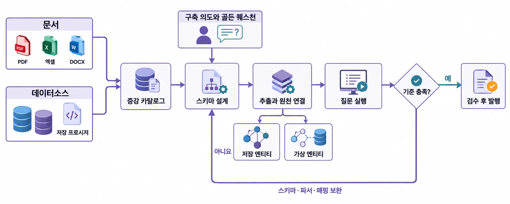
| 단계 | 에이전트가 하는 일 | 사람이 하는 일 |
|---|---|---|
| 소스 | — | 문서를 올리고, 데이터소스·시스템을 고른다 |
| 의도 | 문서를 읽고 구축 의도와 골든 퀘스천 초안을 쓴다 | 초안을 읽고 고친다, 질문을 더한다 |
| 설계 | 질문에서 필요한 클래스·관계·속성을 정한다 | (지켜본다) |
| 추출·적재 | 문서의 사실을 인스턴스와 관계로 옮긴다 | (지켜본다) |
| 검증 | 골든 퀘스천을 직접 실행해 답이 나오는지 본다 | 보고서를 읽는다 |
| 검수·발행 | — | 품질 검수 항목을 판단하고, 발행을 결정한다 |
1단계 — 소스와 대상#
홈의 「온톨로지 구축」 카드를 엽니다. 왼쪽이 구축 브리프, 오른쪽이 온톨로지 그래프입니다.
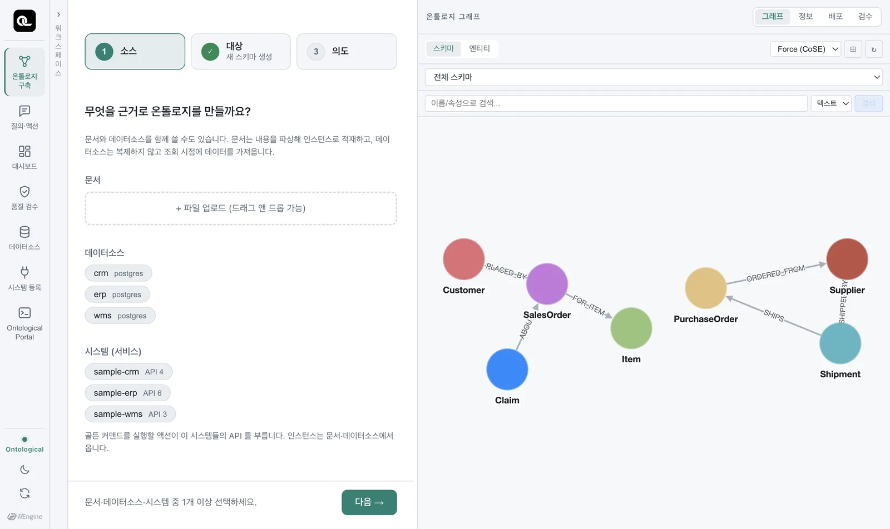
- 소스: 「파일 업로드」에 실습 문서를 끌어다 놓습니다. 이번에는 문서 하나만 씁니다. (데이터소스·시스템도 함께 고를 수 있습니다 — 문서는 내용을 파싱해 인스턴스로 적재하고, 데이터소스는 복제하지 않고 조회 시점에 가져옵니다.)
- 대상: 「새 스키마 생성」을 고르고 이름을
협력사 품질 온톨로지로 적습니다. 이미 있는 온톨로지에 더하려면 목록에서 고릅니다(추가 인제스천).
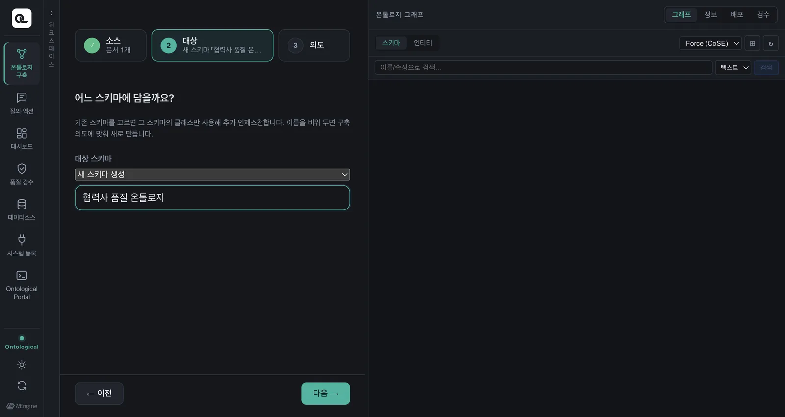
2단계 — 의도와 골든 퀘스천#
「의도」로 넘어가면 에이전트가 문서를 먼저 읽고 구축 의도와 골든 퀘스천 초안을 써 줍니다(실측 약 50초). 「초안」 표시가 붙어 있으니, 읽고 고친 뒤 확정합니다.
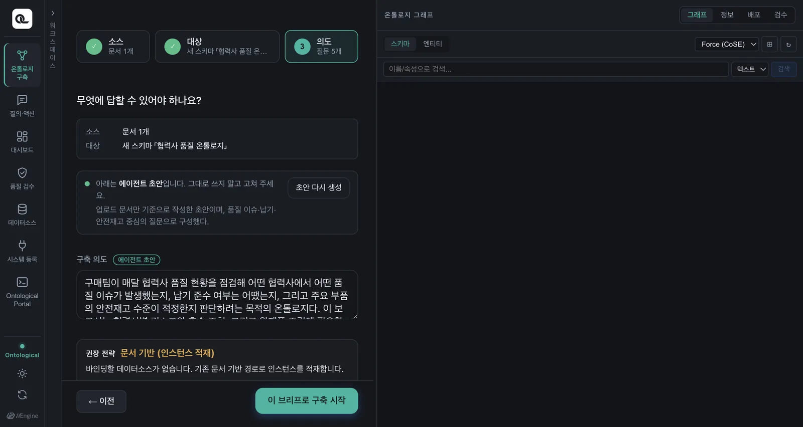
여기에 정말 묻고 싶은 질문을 하나 더 넣습니다.
납땜 불량이 난 부품은 어느 완제품에 들어가고, 그 협력사의 담당자는 누구인가?
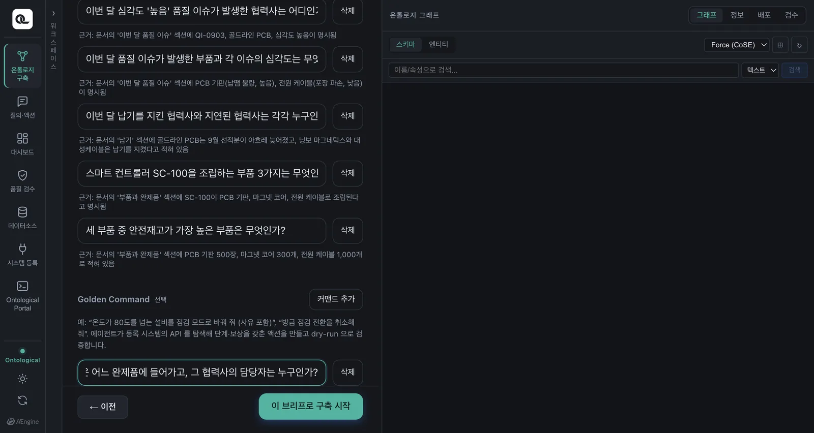
이 질문에 답하려면 품질 이슈 → 부품 → 완제품과 부품 → 협력사 → 담당자 관계를 따라가야 합니다. 이런 질문이 있어야 에이전트가 그 경로를 스키마에 만듭니다(11장).
3단계 — 구축#
「이 브리프로 구축 시작」을 누릅니다. 에이전트가 일하는 과정이 대화창에 도구 호출로 흐릅니다. 화면에 보이는 도구 호출 하나하나가 실제로 일어난 작업입니다(실측 약 6분).
에이전트가 “병합할까요, 분리할까요?”라고 물으면
같은 그래프에 예제 「공급망 운영」의 Supplier처럼 이름이 같은 클래스가 이미 있으면, 에이전트가 구축 중에 기존 클래스와 병합할지 별도 클래스로 분리할지 묻습니다. 이 장을 따라 할 때는 「분리」라고 답하세요. 예제 데이터를 건드리지 않고 이 장의 스키마만 따로 만듭니다(에이전트가 QualitySupplier처럼 다른 이름을 쓸 수 있습니다 — 6단계의 질의는 포털의 ENTITY TYPES에서 실제 이름을 확인한 뒤 씁니다).
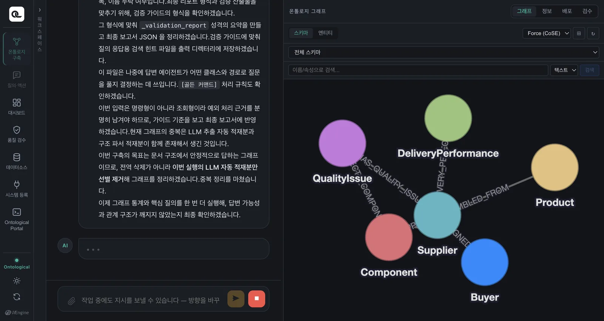
에이전트가 하는 일을 순서대로 보면:
- 문서 구조 파악 — 제목·목록·표를 읽고 무엇이 개념이고 무엇이 사실인지 나눕니다.
- 스키마 설계 — 협력사(
Supplier), 부품(Component), 완제품(Product), 품질 이슈(QualityIssue), 담당자(Buyer), 납기 실적(DeliveryPerformance) 같은 클래스와 그 사이의 관계를 정합니다. - 인스턴스 적재 — “골드라인 PCB가 PCB 기판을 공급한다”는 한 문장이 노드 두 개와 관계 하나가 됩니다.
- 같은 대상 맞추기 — 문서 여러 곳의 “골드라인 PCB”, “골드라인 PCB 가 납품한”이 같은 협력사인지 맞춥니다(아래 「엔티티 식별」).
- 검증 — 골든 퀘스천을 직접 실행해 답이 나오는지 보고, 결과를 보고합니다.
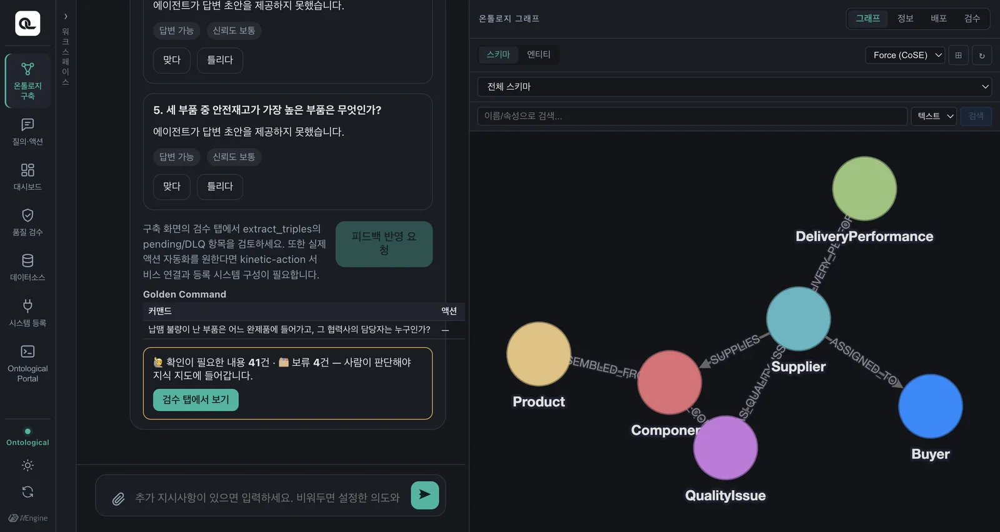
엔티티 식별 — 같은 것을 같다고 알아보기#
문서에는 같은 대상이 여러 이름으로 나옵니다. 에이전트는 이름·코드·문맥·버전을 대조해 같은 대상을 하나로 잇고, 애매하면 사람에게 묻습니다. 원문의 표현과 출처는 버리지 않고 남깁니다.
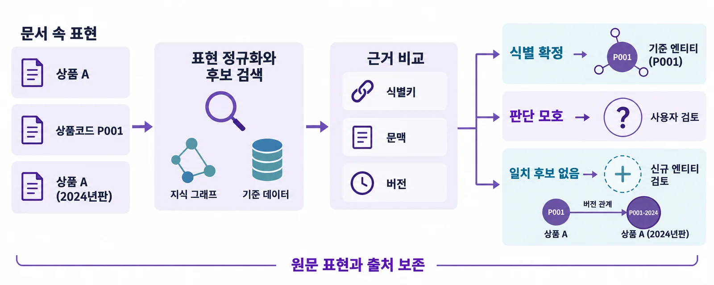
데이터베이스가 소스일 때 — 메타데이터 증강#
이 장에서는 문서를 썼지만, 소스로 데이터소스를 고르면 에이전트는 테이블·컬럼·키를 읽고 실제 값과 쓰임새를 살펴 업무 의미를 보강합니다. TB507.C041 같은 코드명 컬럼도 업무 용어로 찾을 수 있게 됩니다. 데이터는 복사하지 않고, 인스턴스는 가상 노드처럼 조회 시점에 원천에서 가져옵니다.
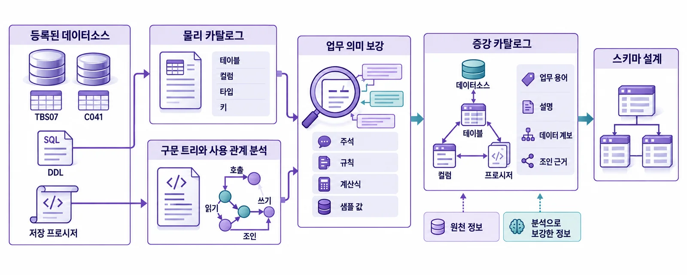
4단계 — 만들어진 온톨로지 보기#
구축이 끝나면 오른쪽 「그래프」 탭에 지도가 남습니다. 「스키마」는 클래스와 관계, 「엔티티」는 인스턴스입니다. 노드를 끌어 옮기고, 위쪽 목록에서 배치(Force, Circle, Tree …)를 바꿀 수 있습니다.
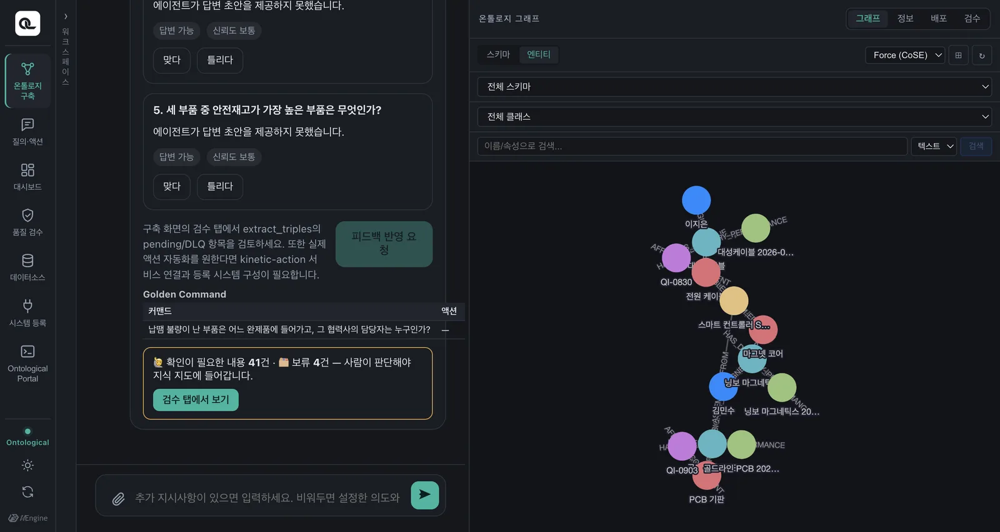
「정보」 탭에서는 스키마를 목록으로 보고 고칠 수 있습니다. 클래스마다 인스턴스 수가 보이고, ✎로 속성을 더하거나 이름을 바꾸고, 「+ 클래스 추가」, 「+ 관계 추가」로 직접 다듬을 수 있습니다.
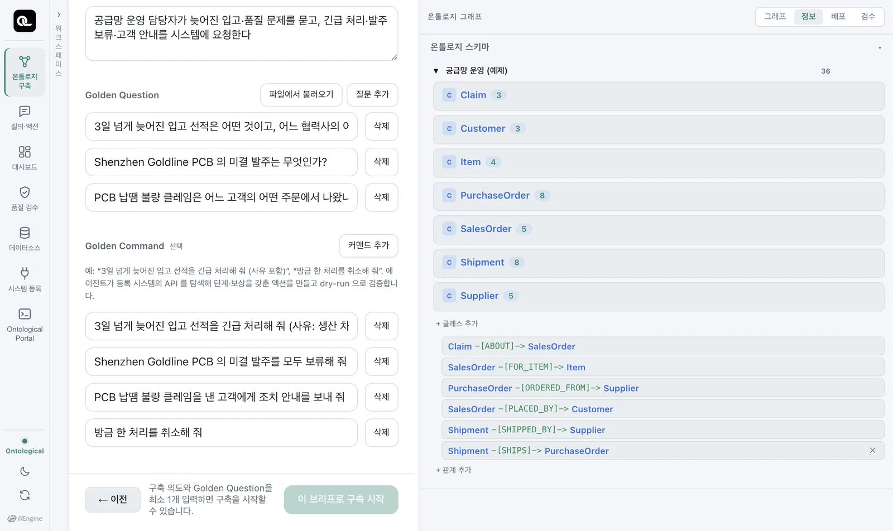
5단계 — 검수와 발행#
품질 검수 카드에는 구축이 남긴, 사람이 판단할 것들이 모입니다(원문과 다른 값, 확신이 낮은 추출, 원천 간 충돌 등). 맞으면 확정하고, 틀리면 고치거나 기각합니다. AI가 임의로 확정하지 않습니다.
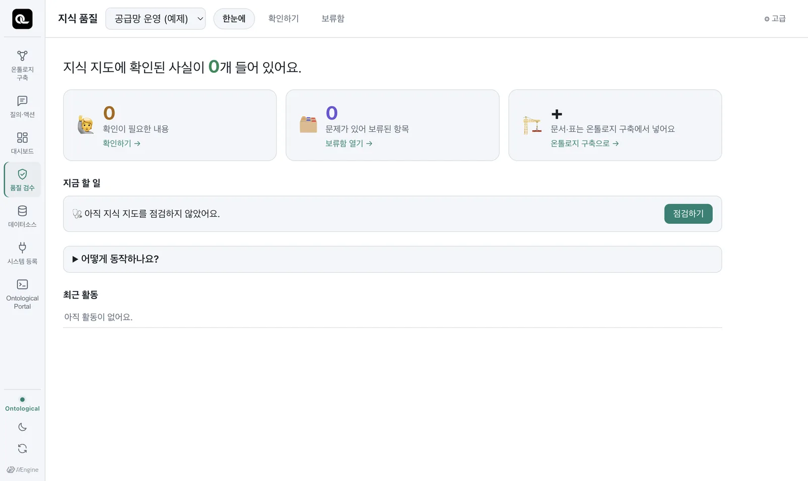
그리고 발행입니다. 발행해야 질의·액션·앱에서 이 온톨로지를 씁니다. 발행할지는 사람이 정합니다.
현재 버전에서는 대화로 발행합니다
이 판의 화면에는 발행 버튼이 없습니다. 골든 커맨드 없이 문서로만 구축하면 에이전트가 스스로 발행하지 않으므로, 구축 대화창에 이렇게 지시하세요.
text
발행해 줘
에이전트가 질의에서 쓸 수 있게 내보내고, 무엇이 반영됐는지 보고합니다(실측 약 50초).
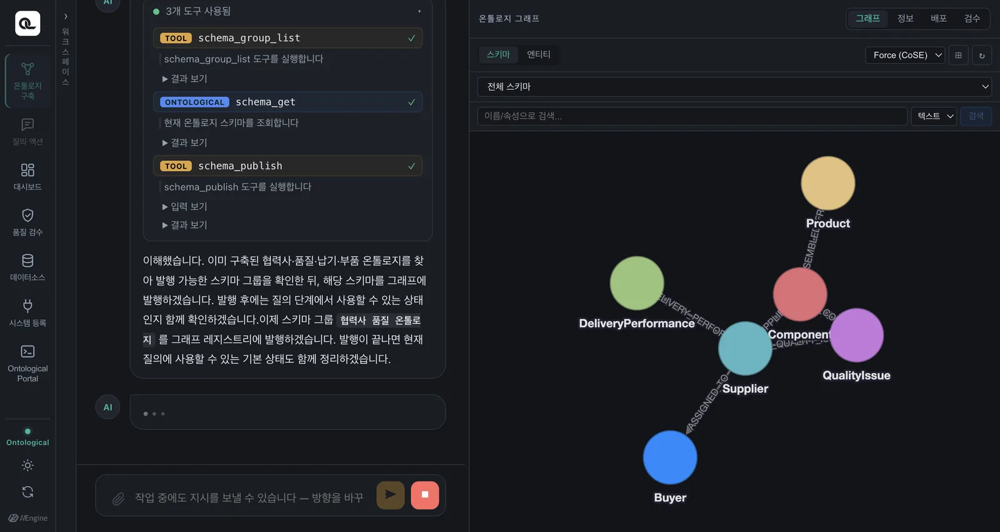
6단계 — 물어보기#
이제 「질의·액션」 탭을 새로 열고 앞에서 작성한 골든 퀘스천을 그대로 입력해 봅니다. 무엇을 어떤 순서로 찾으라고는 알려 주지 않습니다.
납땜 불량이 난 부품은 어느 완제품에 들어가고, 그 협력사의 담당자는 누구인가?
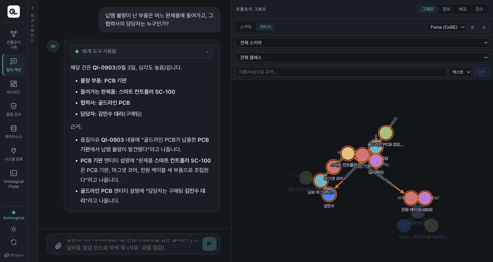
답과 함께 어느 사실을 근거로 삼았는지가 적힙니다. 질의 화면은 13장에서 자세히 봅니다.
에이전트의 답은 매번 조금씩 다릅니다
같은 문서로 다시 구축하면 클래스 이름이나 관계 이름이 조금 다르게 나올 수 있습니다. LLM이 설계하기 때문입니다. 그래서 골든 퀘스천이 중요합니다 — 이름이 달라도 질문에 같은 답을 내는지로 품질을 잽니다.
실습 과제
- 실습 문서로 직접 구축하고 발행한 뒤, 골든 퀘스천에 같은 답(SC-100, 김민수 대리)이 나오는지 확인하세요.
- 문서에 협력사 한 곳을 더 적어(예: “한빛정밀 — 경기도 화성의 1차 협력사. 마그넷 코어를 공급한다. 담당자는 박서준 과장.”) 같은 스키마에 추가 인제스천하고, “마그넷 코어를 공급하는 협력사와 담당자는?”이라고 물어보세요.
- 포털에서 그래프를
ontology로 바꾸고, 여러분이 만든 클래스를 Cypher로 조회해 보세요.
도움말
2번: 대상 단계에서 앞서 만든 스키마를 고르면 「(추가 인제스천)」으로 표시됩니다. 같은 클래스 이름이 이미 있으면 그 클래스에 인스턴스가 더해집니다.
3번: 클래스 이름은 에이전트가 정하므로 포털 왼쪽 ENTITY TYPES에서 확인한 뒤 씁니다. 예: MATCH (s:Supplier)-[r]->(c:Component) RETURN s.name, type(r), c.name — 관계 이름을 모르면 이처럼 [r]로 받고 type(r)로 확인할 수 있습니다(저장된 관계에서는 이름 없는 관계 패턴도 동작합니다).